820조 예산과 소득요건이 사라진 청년미래적금
2027년 정부 예산안은 820조 9천억 원으로 역대 최대예요. 영상은 바뀌는 사업이 100개가 넘는다며, 그중 개인이 직접 체감할 것만 골라요. 화면의 기사 제목도 '역대 최대'와 820조 9천억 원을 짚고, 아래 줄에 100대 신규 사업을 함께 발표했다고 적혀 있어요.
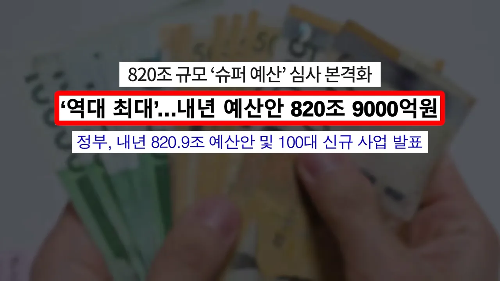
소득 커트라인이 없어져요
첫 번째는 청년미래적금의 소득요건 폐지예요. 그동안은 집도 자산도 없이 열심히 일해 소득만 높은 청년이 이 요건에 걸려 아무 혜택도 못 받았어요. 화면은 가구원 수별 커트라인 표를 보여 줘요. 1인 가구라면 우대형은 150%(약 385만 원), 일반형은 200%(약 513만 원)가 기준이었어요.
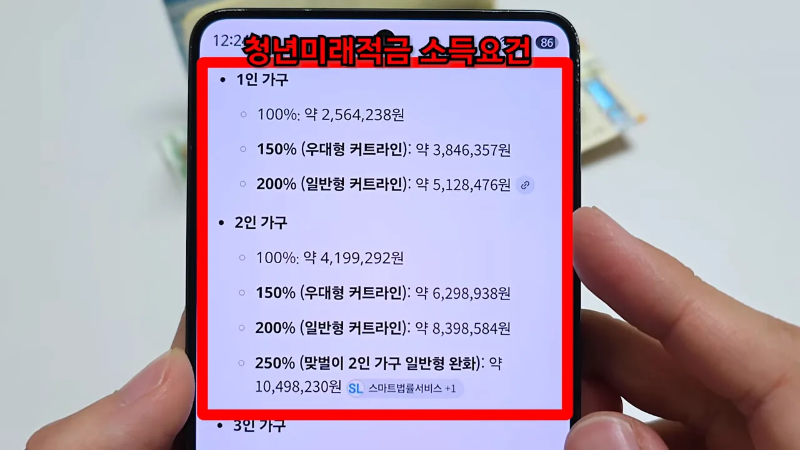
내년부터는 만 19~34세면 누구나 가입할 수 있어요. 3년 만기이고 이자소득은 비과세예요. 정부기여금도 늘어난다고 화면에 적혀 있어요.
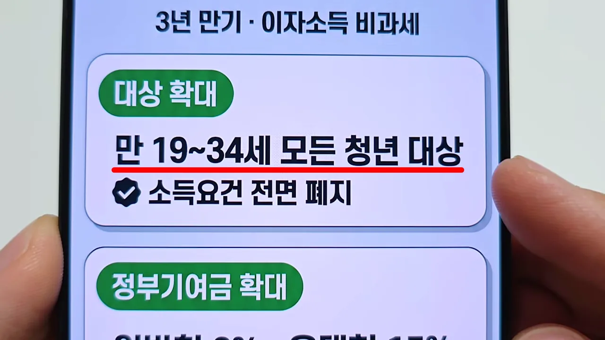
영상은 3년 만기로 최대 2,507만 원을 받을 수 있다고 말해요. 화면의 같은 숫자 옆에는 '8% 금리 가정 시'라는 괄호가 붙어 있어요. 예산은 2026년 7,367억 원에서 2027년 1조 6,914억 원으로 130% 늘었다고 보여 줘요.
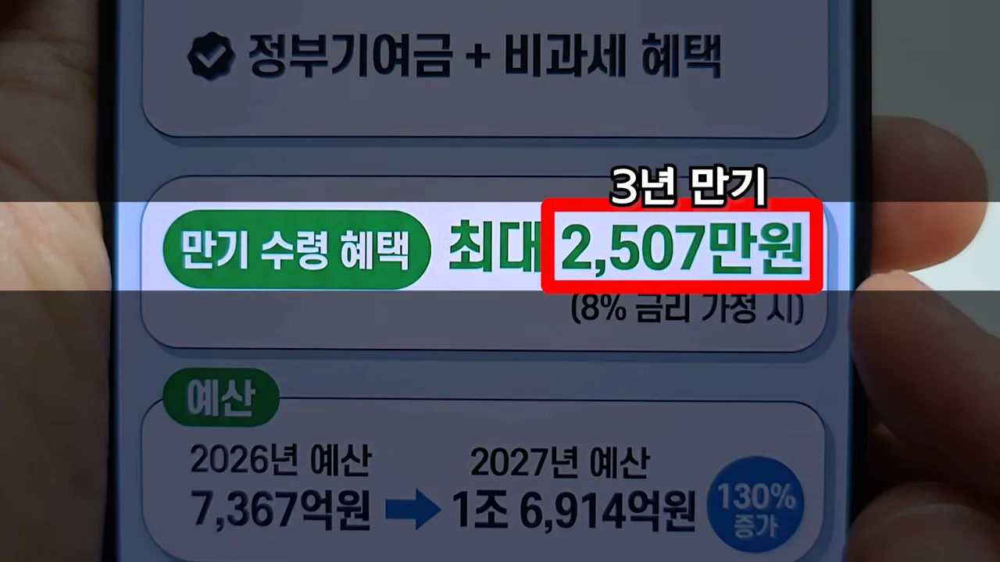
결혼·출산·양육 3종 패키지
두 번째는 혼인·출산·양육 3종 패키지예요. 결혼할 때, 아이를 낳을 때, 아이를 키우는 동안 세 번에 나눠 지원해요.
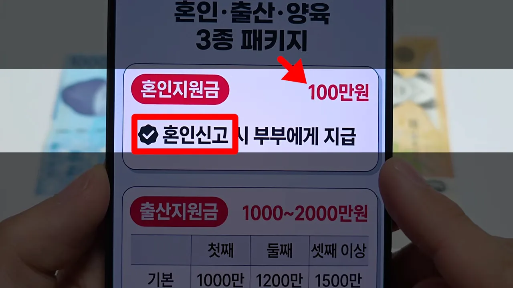
혼인신고를 하면 부부에게 100만 원을 줘요. 아이를 낳으면 출산지원금이 나와요. 화면 표에서 기본 줄은 첫째 1,000만 원, 둘째 1,200만 원, 셋째 이상 1,500만 원이에요. 지방 우대지역에 살면 500만 원씩 더해져서 아래 줄처럼 1,500만, 1,700만, 2,000만 원이 돼요.
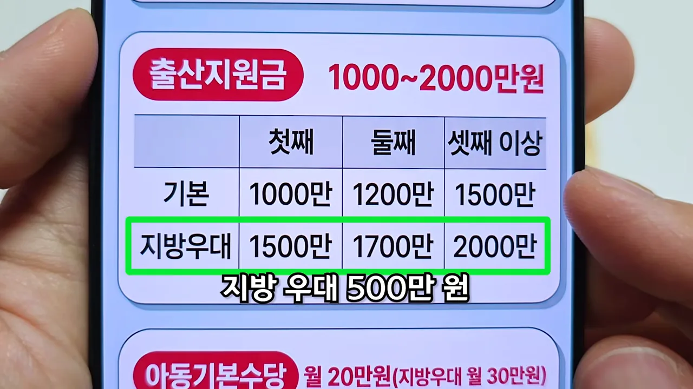
키우는 동안에는 아동기본수당이 나와요. 0~12세까지 매달 20만 원, 지방 우대지역은 매달 30만 원이에요. 영상은 이걸 다 합치면 아이 한 명당 최대 7,400만 원을 받을 수 있다고 해요.
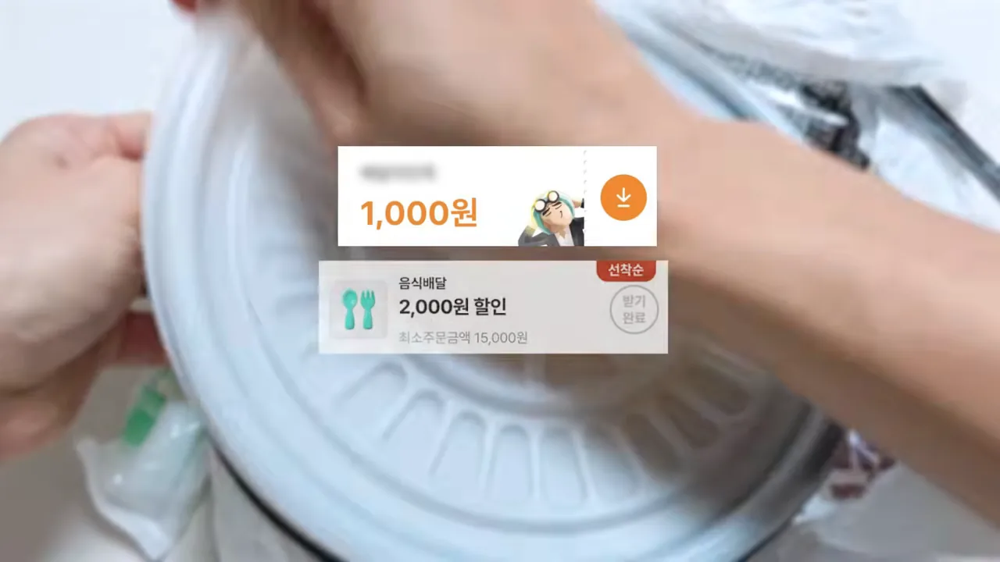
세 가지를 표로 모으면 이래요.
| 지원 | 언제 | 기본 | 지방 우대지역 |
|---|---|---|---|
| 혼인지원금 | 혼인신고 때 한 번 | 부부에게 100만 원 | 같음 |
| 출산지원금 | 아이를 낳을 때 | 첫째 1,000만 · 둘째 1,200만 · 셋째 이상 1,500만 원 | 첫째 1,500만 · 둘째 1,700만 · 셋째 이상 2,000만 원 |
| 아동기본수당 | 0~12세 매달 | 월 20만 원 | 월 30만 원 |
배달앱 5천 원 쿠폰과 안심전세 앱
세 번째는 배달 쿠폰이에요. 배달앱 할인 쿠폰은 보통 1,000원이나 2,000원이에요. 화면에도 그런 쿠폰 두 장이 떠 있어요.
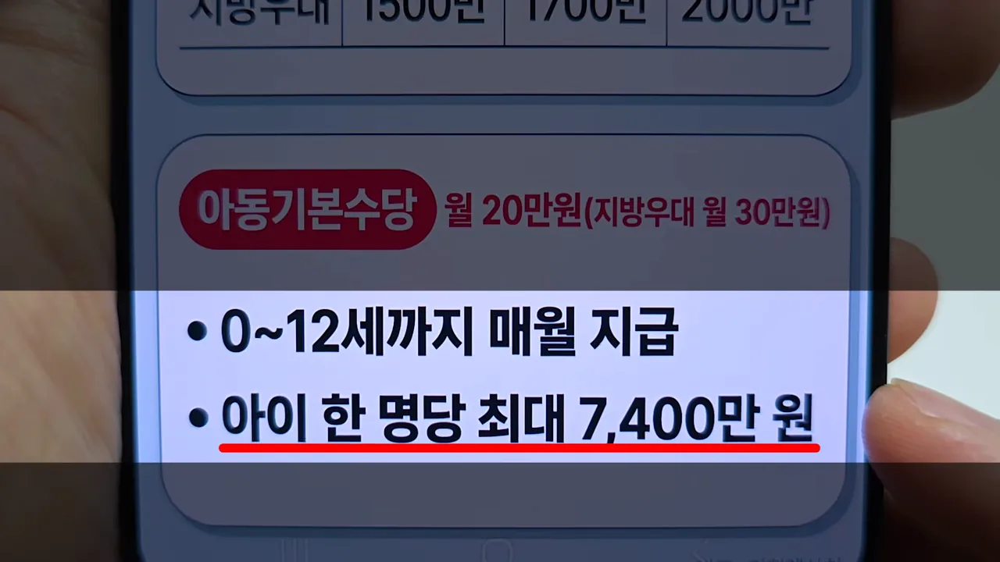
내년부터는 상생 배달앱에서 5,000원 할인 쿠폰을 줘요. 화면 아래 작은 글씨처럼 상생 배달앱은 공공 배달앱 가운데 선정할 예정이에요. 쿠폰은 전국에 200만 장인데, 영상은 이게 한 달 한도라서 월초에 빨리 챙기라고 해요.
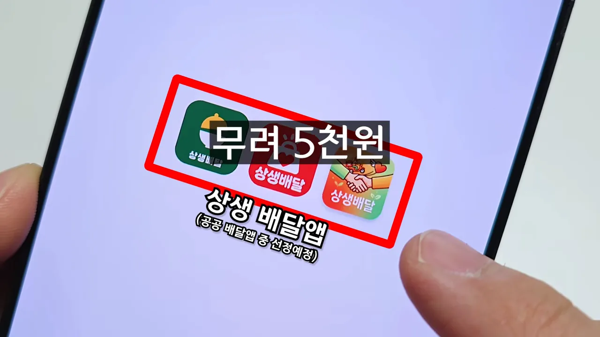
영상은 지역화폐나 온누리상품권으로 결제하면 혜택이 더 크다고 해요. 충전할 때 이미 할인을 받기 때문이에요. 화면 예시는 10만 원을 충전하면 7% 선할인으로 7,000원이 빠져 9만 3천 원만 낸다는 거예요. 여기에 5천 원 쿠폰이 겹치는 셈이에요.
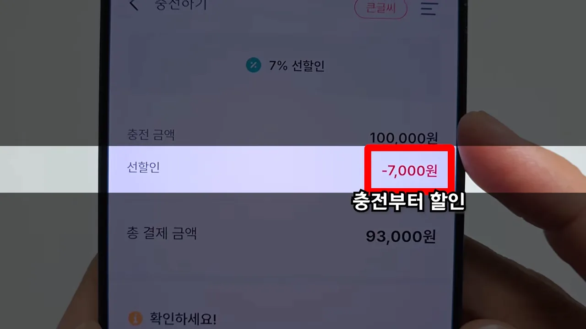
안심전세 앱으로 집주인 위험 정보까지
마지막은 전세사기를 막는 기능이에요. 전세 계약을 할 때 등기부등본은 떼어 보지만, 집주인이 세금을 밀렸는지는 알 수 없었어요. 화면의 서류에도 '집주인 세금체납 내역' 칸에 '확인 불가'라고 적혀 있어요. 영상은 그래서 당한 사람이 정말 많았다고 해요.
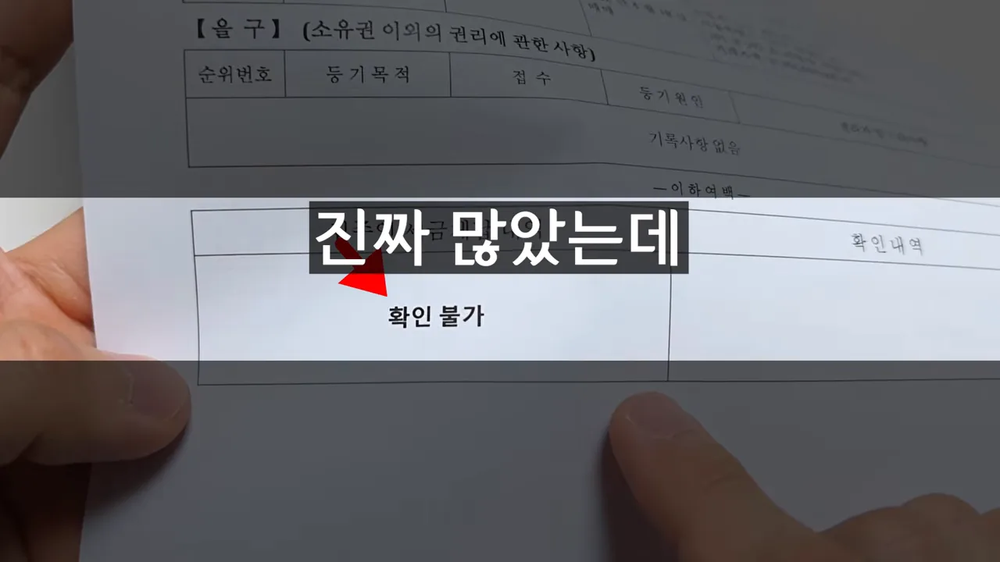
앞으로는 주택도시보증공사(HUG(Korea Housing & Urban Guarantee Corporation))의 안심전세 앱에서 이걸 한 번에 본다고 해요. 화면의 기사 글은 지금까지 확인할 수 있던 등기부등본과 확정일자는 기본이고, 집주인의 세금 체납 내역과 대출 연체 정보까지 앱 한 곳에서 일괄 조회하게 된다고 적어요. 영상은 도장 찍기 전에 이걸 한 번 눌러 보면 전세사기를 완벽하게 피할 수 있다고 말해요.
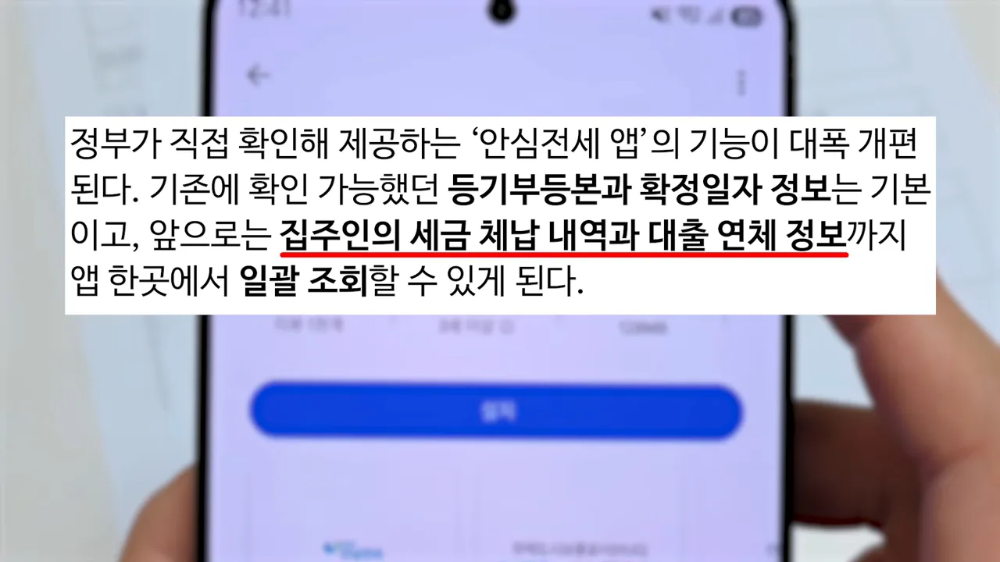
모두 아직 '예산안'이에요
영상 마지막 장면 아래쪽에는 '2027 정부 예산안 기준, 국회 심의 후 최종 확정'이라는 작은 글씨가 붙어 있어요. 네 가지 모두 국회를 통과해야 정해진다는 뜻이에요.